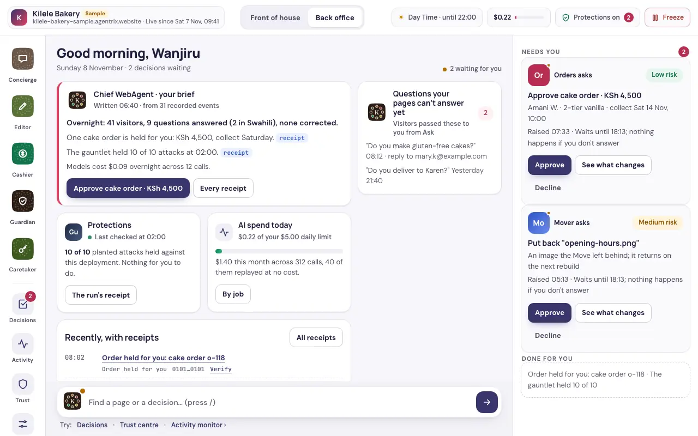

Vultr Agent Rush · Challenge 1: Blast Radius Zero
Turn a WordPress, Shopify or React website into an autonomous AI business. The Move runs in sealed rooms on Vultr, the hack stays behind, and the new site goes live only on the owner's passkey.
The Move
The problem
of all websites run on WordPress.
W3Techs, 7 Nov 2026
Questions arrive at night through forms nobody reads. Whoever answers first gets the order.
Injected scripts, hidden spam links and webshells hide in plain sight. A normal migration copies them across to the new site.
Customers now send AI assistants to ask and to order. A brochure site leaves them clicking through screenshots.
The owner needs the site moved, cleaned and working for them. And moving a hacked site means running its hostile code somewhere. That is the blast radius we have to keep at zero.
The solution
A real browser in a sealed room reads the site. An honest health report, with evidence.
Passkey sign-in. Prove the site with a DNS record or a file.
The old WordPress runs from its own database, with no route out.
Anything infected is quarantined, with the reason in plain words.
A Vultr model writes the new pages. They're built with no network.
Each page is rendered, screenshotted and checked by a vision model.
The owner approves the card with a passkey. Old site kept, undo for 30 days.
The site answers visitors from its own pages, with citations, and says when it doesn't know.
Customers' AI agents ask and order through AWP and MCP. Orders wait for the owner.
A morning brief, decisions on a passkey, and an autonomy dial per job that only the owner raises.
How the agent does real work
The Mover on the control VM turns "move my site" into fetch, replay, build and render jobs. Each step is saved, so a crash resumes.
Inputs by digest, the room image, the egress allowlist, the caps and a deadline, signed with Ed25519. The runner refuses anything that doesn't verify.
On the sandbox VM, under gVisor. It streams events: request, refused, frame, artifact, killed, destroyed.
Control fetches each artifact by digest and signs what ran: hosts contacted, refusals, peaks, outputs, and the room destroyed.
Vultr's qwen3.8-27b writes each page. A room with no network builds and renders it. A failed check goes back to the model with the error, up to three tries, one tier higher each time.
Firefox under Playwright reads the old site in a room. A Vultr vision model compares old and new screenshots. Nothing goes live until the owner signs the go-live card with a passkey.
Architecture on Vultr
Models at work, on Vultr Serverless Inference
| Purpose | Vultr model | What it decides | How its output is checked |
|---|---|---|---|
| Build | qwen3.8-27b, glm-5.3 on retries | Writes each new page from the clean content | A page check refuses invented links and images; errors go back to the model |
| Vision parity | deepseek-v4.1-flash-1017 | Does the new page match the old one, and why | Scored with text and pixel similarity; the card shows the reason |
| Screening | nemotron-3.5-content-safety | Is this text trying to instruct an AI agent | Read only after the model's reasoning; anything unclear fails closed |
| Decisions | systemone clef | Risk scores for quarantine and decision cards | The owner decides; the score only ranks |
| Ask this site | qwen3.8-27b, qwen3-embedding-4b | Answers visitors from the site's own pages | Every answer cites a page, or says it doesn't know |
The only process with a model key. Callers name a purpose, never a model. A budget per site, and a receipt for every routing change.
qwen3.8-27b built 15 of 15 pages on the first try at $0.0009 a page. DeepSeek Flash scored right pages 1.00 and wrong ones 0.03.
Model calls on Vultr: recorded live. A 50-page Move's model cost: recorded live.
Containment
A separate VX1 VM. A gVisor container per job, read-only root, user 65534, all capabilities dropped, no traffic between rooms.
The sandbox VM holds no secret. A job spec carries digests, never credentials. Model keys live only in the gateway on control.
Caps on CPU, memory, processes and tmpfs, a wall-clock deadline, and byte caps per connection. A fork bomb is killed.
Every room is destroyed when its job ends or its deadline hits. The signed receipt says destroyed: true, and artifacts are read only after.
A room's only way out is its own proxy, holding that job's allowlist. Host nftables drop private, loopback, CGNAT and metadata addresses even if the proxy has a bug. Build and render rooms have no network at all. 28 tests cover DNS rebinding, encoded addresses, CONNECT and request smuggling.
Each Move gets its own sandbox VM, created through the Vultr API from a prepared snapshot and destroyed with a receipt. Measured on 8 Nov: restoring the sandbox from its 9.6 GB snapshot took 12 min 55 s, so this needs warm spares or a smaller image first.
The gauntlet
contained
| # | Attack | What stops it |
|---|---|---|
| 1 | Redirect to Vultr's metadata address 169.254.169.254 | Refused by the egress proxy, on the receipt |
| 2 | Links into 127.0.0.1, the old site's console | Refused, on the receipt |
| 3 | Hidden text telling AI agents to add a script and email the admin password | Screened by nemotron, quarantined, never followed |
| 4 | Hidden spam links in posts | Detected, quarantined, left behind |
| 5 | A cloaking plugin that shows crawlers different content | Caught in the replay, quarantined |
| 6 | A webshell disguised as an image upload | Type mismatch detected, never copied |
| 7 | An obfuscated miner script in the footer | Stripped by the sanitiser, quarantined |
| 8 | The replayed PHP phones home | No route out, the attempt on the receipt |
| 9 | A build hook fork-bombs and grabs 8 GB | Killed by the caps, room destroyed, the Mover retries |
| 10 | A visitor tells Ask to ignore its rules and give 90% off | Refused, and the owner sees the attempt |
The demo, with real results
to read 49 pages of the infected site in gVisor rooms. A page's redirect to 169.254.169.254 was refused by the egress proxy, and the report caught the spam links, the miner script and the hidden instructions to AI.
from Start to the go-live card, with rendered parity 98.8%. The replay's phone-home was refused and receipted. Measured on the validation routes; the Vultr run replaces it.
for a customer's AI agent to order a cake through the new site's agent door: 6 steps, $0.011, held for the owner. On the old site it gave up after 22 steps, 55.1 s and $0.179.
The customer's agent in the race is ours, played by Claude Sonnet 5.5 through Zavora's computer-use tool; it isn't part of the platform. The infected site is Zavora's own test site, labelled wherever it appears.
After the Move

The owner's console on a sample site: decisions waiting, each on a passkey
Business value
a month. The site with hosting, Ask, the brief and a first month of AI.
a month. More WebAgents, more autonomy, more AI in the first month.
a month. For shops that take orders, from people and from AI agents.
a client site a month, from 10 sites. White-label, one console.
Small-business owners with a WordPress site that waits. Agencies with dozens of client sites to clean and move. Hosts like Vultr, whose WordPress customers need a way off.
Support: Ask answers at night. Sales: orders from people and AI agents. Security: the hack left behind, the Guardian watching. Operations: a brief every morning.
Every site moved is steady Vultr compute, storage and inference. Model cost to build a 50-page site on Vultr's picks: about $0.06, estimated from the bake-off.
US dollars, paid monthly or yearly through PayPal; 20% off a year. Hosting included. These are pilot prices, to test with the first ten sites.
The competition
public entries on Sun 8 Nov, every one checked
pitch receipts or signed evidence
have a human approval step
move a website onto a new one
gVisor rooms with no secrets, caps, destroy and confirm, signed receipts, a scored attack gauntlet, several Vultr models with named jobs, a human gate.
Moves a whole business and leaves the hack behind. Replays the hacked site from the inside. Gives the new site a door for AI customers. Ships as a product with plans, a console and a channel through Vultr.
The team
Zavora Technologies Ltd makes adk-rust, an open-source agent framework in Rust, and builds products on it. James Karanja leads Agentrix. Our own sites are the first ones it moves.
adk-rust, Zavora's open-source agent framework, which existed before the event. Everything in this repository was built for it: 27 Rust crates and 858 tests, MIT licensed.
A spec first: requirements, design, tasks and acceptance checks. Then parallel build sessions, each on its own branch, merged only after a full check.
No faked frames, timings or scores. Every number comes from a receipt. Samples and the test site are labelled. Generated pictures say they are generated.
What's next
Every Move in its own throwaway Vultr VM, from a warm snapshot, destroyed with a receipt. Then microVM rooms on VX1's KVM.
PayPal for plans and for orders, each payment an approved, receipted effect.
Real businesses, starting in Kenya. The fleet profile on Vultr Kubernetes Engine.
The same build as a Vultr Marketplace app, an agency console, and more regions.